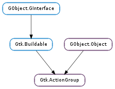

| static | new(name) |
| add_action(action) | |
| add_action_with_accel(action, accelerator) | |
| add_actions(entries[, user_data]) | |
| add_radio_actions(entries[, value, on_change, user_data]) | |
| add_toggle_actions(entries[, user_data]) | |
| get_accel_group() | |
| get_action(action_name) | |
| get_name() | |
| get_sensitive() | |
| get_visible() | |
| list_actions() | |
| remove_action(action) | |
| set_accel_group(accel_group) | |
| set_sensitive(sensitive) | |
| set_translate_func(func, *data) | |
| set_translation_domain(domain) | |
| set_visible(visible) | |
| translate_string(string) |
| Name | Type | Flags | Description |
|---|---|---|---|
| accel-group | Gtk.AccelGroup | r/w | The accelerator group the actions of this group should use. |
| name | str | r/w/c | A name for the action group. |
| sensitive | bool | r/w | Whether the action group is enabled. |
| visible | bool | r/w | Whether the action group is visible. |
| Name | Parameters | Return | Description |
|---|---|---|---|
| connect-proxy | Gtk.Action, Gtk.Widget | The ::connect-proxy signal is emitted after connecting a proxy to an action in the group. Note that the proxy may have been connected to a different action before. This is intended for simple customizations for which a custom action class would be too clumsy, e.g. showing tooltips for menuitems in the statusbar. Gtk.UIManager proxies the signal and provides global notification just before any action is connected to a proxy, which is probably more convenient to use. | |
| disconnect-proxy | Gtk.Action, Gtk.Widget | The ::disconnect-proxy signal is emitted after disconnecting a proxy from an action in the group. Gtk.UIManager proxies the signal and provides global notification just before any action is connected to a proxy, which is probably more convenient to use. | |
| post-activate | Gtk.Action | The ::post-activate signal is emitted just after the action in the action_group is activated This is intended for Gtk.UIManager to proxy the signal and provide global notification just after any action is activated. | |
| pre-activate | Gtk.Action | The ::pre-activate signal is emitted just before the action in the action_group is activated This is intended for Gtk.UIManager to proxy the signal and provide global notification just before any action is activated. |
| Name | Type | Access |
|---|---|---|
| parent | GObject.Object | r |
Bases: GObject.Object, Gtk.Buildable
Actions are organised into groups. An action group is essentially a map from names to Gtk.Action objects.
All actions that would make sense to use in a particular context should be in a single group. Multiple action groups may be used for a particular user interface. In fact, it is expected that most nontrivial applications will make use of multiple groups. For example, in an application that can edit multiple documents, one group holding global actions (e.g. quit, about, new), and one group per document holding actions that act on that document (eg. save, cut/copy/paste, etc). Each window’s menus would be constructed from a combination of two action groups.
Accelerators are handled by the GTK+ accelerator map. All actions are assigned an accelerator path (which normally has the form <Actions>/group-name/action-name) and a shortcut is associated with this accelerator path. All menuitems and toolitems take on this accelerator path. The GTK+ accelerator map code makes sure that the correct shortcut is displayed next to the menu item.
Gtk.ActionGroup as Gtk.Buildable
The Gtk.ActionGroup implementation of the Gtk.Buildable interface accepts Gtk.Action objects as <child> elements in UI definitions.
Note that it is probably more common to define actions and action groups in the code, since they are directly related to what the code can do.
The Gtk.ActionGroup implementation of the Gtk.Buildable interface supports a custom <accelerator> element, which has attributes named key and modifiers and allows to specify accelerators. This is similar to the <accelerator> element of Gtk.Widget, the main difference is that it doesn’t allow you to specify a signal.
A Gtk.Dialog UI definition fragment.
<object class="GtkActionGroup" id="actiongroup">
<child>
<object class="GtkAction" id="About">
<property name="name">About</property>
<property name="stock_id">gtk-about</property>
<signal handler="about_activate" name="activate" />
</object>
<accelerator key="F1" modifiers="GDK_CONTROL_MASK | GDK_SHIFT_MASK" />
</child>
</object>
| Parameters: | name (str) – the name of the action group. |
|---|---|
| Returns: | the new Gtk.ActionGroup |
| Return type: | Gtk.ActionGroup |
Creates a new Gtk.ActionGroup object. The name of the action group is used when associating keybindings with the actions.
| Parameters: | action (Gtk.Action) – an action |
|---|
Adds an action object to the action group. Note that this function does not set up the accel path of the action, which can lead to problems if a user tries to modify the accelerator of a menuitem associated with the action. Therefore you must either set the accel path yourself with Gtk.Action.set_accel_path (), or use gtk_action_group_add_action_with_accel (..., NULL).
| Parameters: |
|
|---|
Adds an action object to the action group and sets up the accelerator.
If accelerator is None, attempts to use the accelerator associated with the stock_id of the action.
Accel paths are set to <Actions>/group-name/action-name.
The add_actions() method is a convenience method that creates a number of gtk.Action objects based on the information in the list of action entry tuples contained in entries and adds them to the action group. The entry tuples can vary in size from one to six items with the following information:
- The name of the action. Must be specified.
- The stock id for the action. Optional with a default value of None if a label is specified.
- The label for the action. This field should typically be marked for translation, see the set_translation_domain() method. Optional with a default value of None if a stock id is specified.
- The accelerator for the action, in the format understood by the gtk.accelerator_parse() function. Optional with a default value of None.
- The tooltip for the action. This field should typically be marked for translation, see the set_translation_domain() method. Optional with a default value of None.
- The callback function invoked when the action is activated. Optional with a default value of None.
The “activate” signals of the actions are connected to the callbacks and their accel paths are set to <Actions>/group-name/action-name.
The add_radio_actions() method is a convenience method that creates a number of gtk.RadioAction objects based on the information in the list of action entry tuples contained in entries and adds them to the action group. The entry tuples can vary in size from one to six items with the following information:
- The name of the action. Must be specified.
- The stock id for the action. Optional with a default value of None if a label is specified.
- The label for the action. This field should typically be marked for translation, see the set_translation_domain() method. Optional with a default value of None if a stock id is specified.
- The accelerator for the action, in the format understood by the gtk.accelerator_parse() function. Optional with a default value of None.
- The tooltip for the action. This field should typically be marked for translation, see the set_translation_domain() method. Optional with a default value of None.
- The value to set on the radio action. Optional with a default value of 0. Should be specified in applications.
The value parameter specifies the radio action that should be set active. The “changed” signal of the first radio action is connected to the on_change callback (if specified and not None) and the accel paths of the actions are set to <Actions>/group-name/action-name.
The add_toggle_actions() method is a convenience method that creates a number of gtk.ToggleAction objects based on the information in the list of action entry tuples contained in entries and adds them to the action group. The toggle action entry tuples can vary in size from one to seven items with the following information:
- The name of the action. Must be specified.
- The stock id for the action. Optional with a default value of None if a label is specified.
- The label for the action. This field should typically be marked for translation, see the set_translation_domain() method. Optional with a default value of None if a stock id is specified.
- The accelerator for the action, in the format understood by the gtk.accelerator_parse() function. Optional with a default value of None.
- The tooltip for the action. This field should typically be marked for translation, see the set_translation_domain() method. Optional with a default value of None.
- The callback function invoked when the action is activated. Optional with a default value of None.
- A flag indicating whether the toggle action is active. Optional with a default value of False.
The “activate” signals of the actions are connected to the callbacks and their accel paths are set to <Actions>/group-name/action-name.
| Returns: | the accelerator group associated with this action group or None if there is none. |
|---|---|
| Return type: | Gtk.AccelGroup |
Gets the accelerator group.
| Parameters: | action_name (str) – the name of the action |
|---|---|
| Returns: | the action, or None if no action by that name exists |
| Return type: | Gtk.Action |
Looks up an action in the action group by name.
| Returns: | the name of the action group. |
|---|---|
| Return type: | str |
Gets the name of the action group.
| Returns: | True if the group is sensitive. |
|---|---|
| Return type: | bool |
Returns True if the group is sensitive. The constituent actions can only be logically sensitive (see Gtk.Action.is_sensitive ()) if they are sensitive (see Gtk.Action.get_sensitive ()) and their group is sensitive.
| Returns: | True if the group is visible. |
|---|---|
| Return type: | bool |
Returns True if the group is visible. The constituent actions can only be logically visible (see Gtk.Action.is_visible ()) if they are visible (see Gtk.Action.get_visible ()) and their group is visible.
| Returns: | an allocated list of the action objects in the action group |
|---|---|
| Return type: | [Gtk.Action] |
Lists the actions in the action group.
| Parameters: | action (Gtk.Action) – an action |
|---|
Removes an action object from the action group.
| Parameters: | accel_group (Gtk.AccelGroup or None) – a Gtk.AccelGroup to set or None |
|---|
Sets the accelerator group to be used by every action in this group.
| Parameters: | sensitive (bool) – new sensitivity |
|---|
Changes the sensitivity of action_group
| Parameters: |
|
|---|
Sets a function to be used for translating the label and tooltip of Gtk.ActionEntry s added by Gtk.ActionGroup.add_actions ().
If you’re using gettext(), it is enough to set the translation domain with Gtk.ActionGroup.set_translation_domain ().
| Parameters: | domain (str or None) – the translation domain to use for GLib.dgettext () calls, or None to use the domain set with textdomain() |
|---|
Sets the translation domain and uses GLib.dgettext () for translating the label and tooltip of Gtk.ActionEntry s added by Gtk.ActionGroup.add_actions ().
If you’re not using gettext() for localization, see Gtk.ActionGroup.set_translate_func ().
| Parameters: | visible (bool) – new visiblity |
|---|
Changes the visible of action_group.
| Parameters: | string (str) – a string |
|---|---|
| Returns: | the translation of string |
| Return type: | str |
Translates a string using the function set with Gtk.ActionGroup.set_translate_func (). This is mainly intended for language bindings.